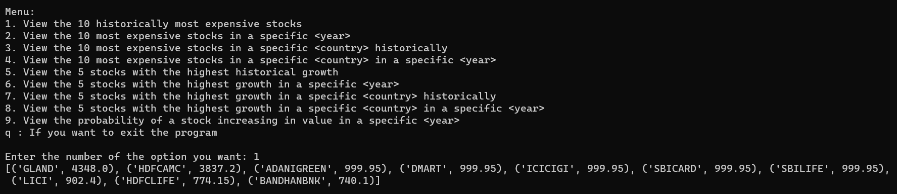
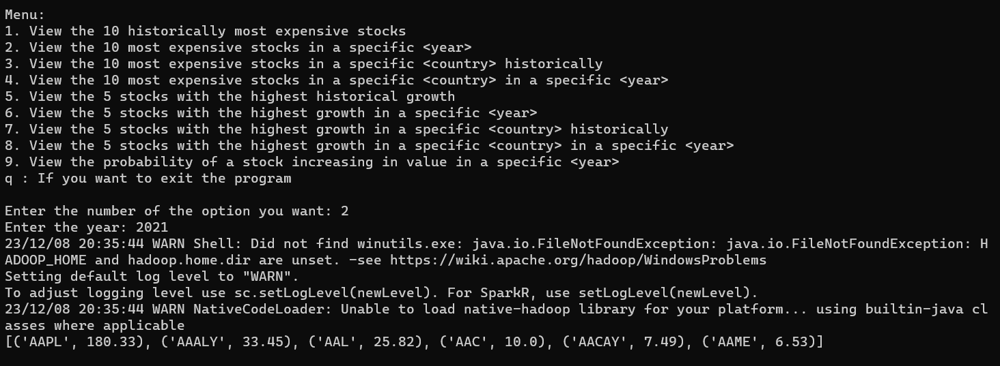
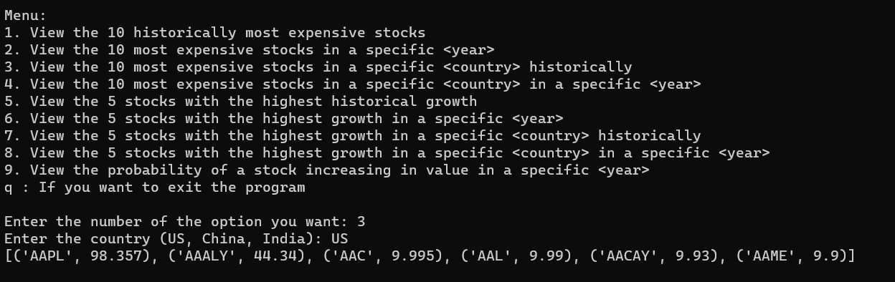
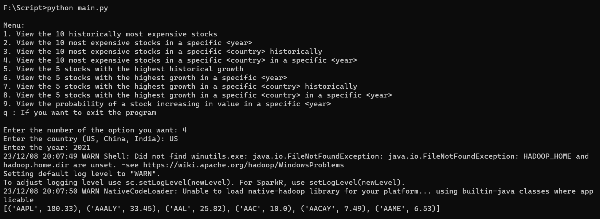
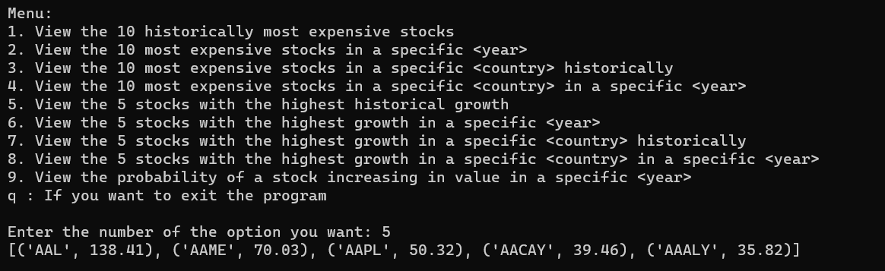
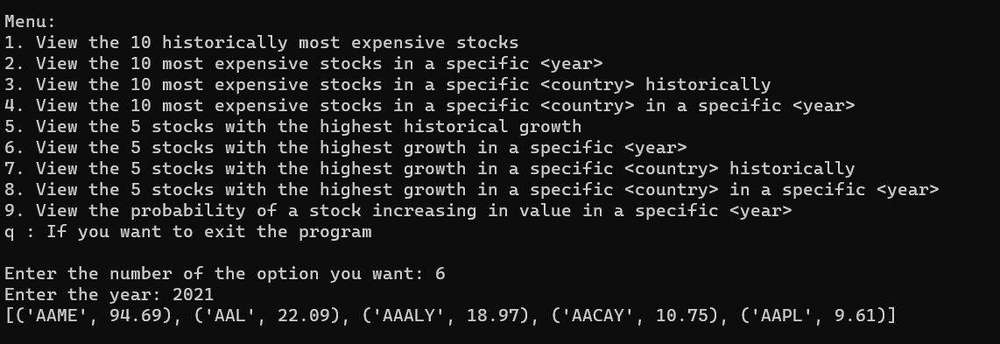
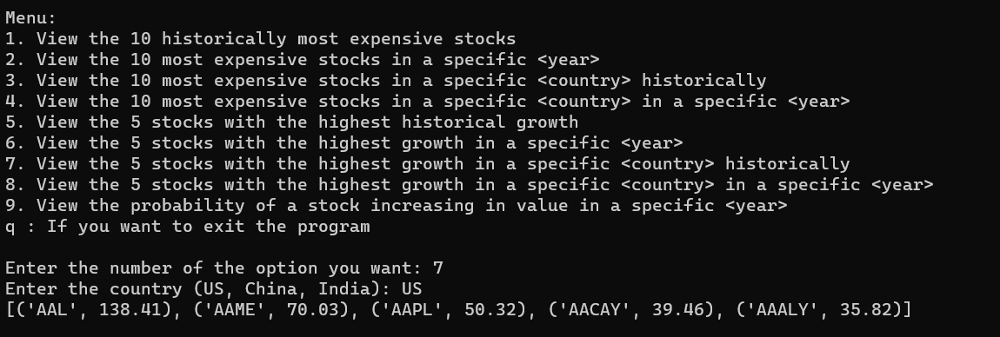
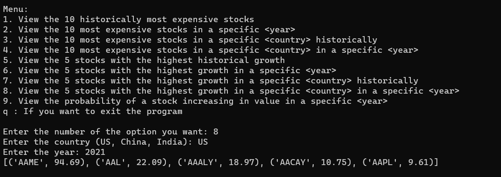
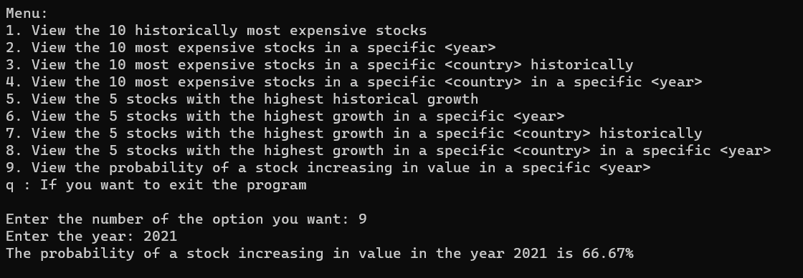

Try it out!
Here is a link to our GitHub repository where you can download our program. In the in the README file you will find a detailed explanation on how to execute our scripts. We have provided some dataset test samples so you can run some tests.
Our application can be executed both locally and on Google Cloud for scalability:
- For local execution, we provided detailed instructions for setting up the Python environment, Java Runtime Environment (JRE), and PySpark. In our case, we utilized VS Code for coding convenience.
- For cloud execution, we leveraged Google Cloud and specifically Google Cloud Dataproc to create clusters for distributed data processing. The application seamlessly integrates with Google Cloud, and we have also outlined the steps for cluster creation and Spark job submission.
Here are some sample tests from our program:
1. View the 10 historically most expensive stocks
2. View the 10 most expensive stocks in a specific year
3. View the 10 most expensive stocks in a specific country historically
4. View the 10 most expensive stocks in a specific country in a specific year
5. View the 5 stocks with the highest historical growth
6. View the 5 stocks with the highest growth in a specific year
7. View the 5 stocks with the highest growth in a specific country historically
8. View the 5 stocks with the highest growth in a specific country in a specific year
9. View the probability of a stock increasing in value in a specific year
